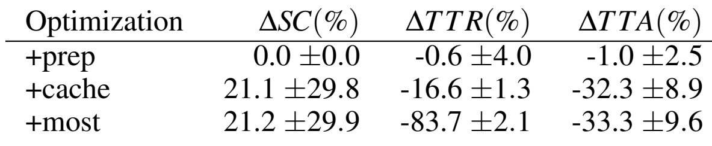

บทแปลคู่ขนาน
Publish-Time Optimizations for Web-Based Visualizations
Ron Pechuk และ Jeffrey Heer · University of Washington · IEEE VIS 2025
DOI 10.1109/VIS60296.2025.00051 · คำแปลเทียบย่อหน้ากับสำเนาที่ได้รับ การแบ่งบรรทัดปรับเพื่ออ่านบนเว็บ ย่อหน้าที่ต่อข้ามหน้ารวมไว้กับหน้าที่เริ่มต้นเพื่อไม่ตัดความหมาย · §6 อยู่หน้า PDF 4 ส่วนหน้า 5 เป็นเอกสารอ้างอิง
หน้า PDF 1 / 5
เปิดหน้าเดิม ↗
Abstract
บทคัดย่อ
ข้อมูลผู้แต่งในต้นฉบับ: Ron Pechuk* · Jeffrey Heer† · University of Washington
* rpechuk@uw.edu · † jheer@uw.edu
Fast loading and responsive interaction lead to more effective web-based visualizations. While run-time optimizations such as caching and data tiling improve interaction latency, these approaches leave initial load performance unoptimized. In this work, we investigate publish-time optimizations that shift computational work ahead of user sessions to accelerate both loading and interaction. We organize the space of publish-time optimizations into categories of data preparation, pre-computation of data assets for optimization, and pre-rendering; and then reason about tradeoffs in terms of time-to-render (TTR), time-to-activation (TTA), and storage cost (SC). To assess their effectiveness, we implement publish-time optimizations for the open-source Mosaic architecture and evaluate their impact across varied visualizations and dataset sizes. On average, publish-time strategies reduced rendering latency by 83.7% and activation latency by 33.3%, demonstrating their value for improving the performance of web-based visualizations.
การโหลดที่รวดเร็วและการโต้ตอบที่ตอบสนองดีช่วยให้เว็บแสดงภาพข้อมูลมีประสิทธิผลมากขึ้น แม้การปรับปรุงตอนรันไทม์ เช่น แคชและการแบ่งข้อมูลเป็นไทล์ จะลดความหน่วงของการโต้ตอบได้ แต่ยังไม่ได้ปรับปรุงประสิทธิภาพการโหลดครั้งแรก งานนี้ศึกษาการปรับปรุงช่วงเผยแพร่ที่ย้ายการคำนวณไปทำก่อนเริ่มเซสชัน เพื่อเร่งทั้งการโหลดและการโต้ตอบ ผู้วิจัยจำแนกแนวทางเป็นการเตรียมข้อมูล การคำนวณทรัพยากรข้อมูลล่วงหน้าเพื่อเพิ่มประสิทธิภาพ และการวาดภาพล่วงหน้า แล้วพิจารณาการชั่งน้ำหนักผ่านเวลาจนภาพปรากฏครบถ้วน (TTR) เวลาจนพร้อมรับการโต้ตอบ (TTA) และต้นทุนพื้นที่จัดเก็บ (SC) เพื่อประเมินผล ผู้วิจัยนำแนวทางเหล่านี้ไปใช้กับสถาปัตยกรรมโอเพนซอร์ส Mosaic และทดสอบกับภาพข้อมูลและขนาดข้อมูลที่หลากหลาย โดยเฉลี่ยลดความหน่วงการแสดงภาพได้ 83.7% และลดความหน่วงก่อนพร้อมโต้ตอบได้ 33.3% แสดงถึงประโยชน์ต่อประสิทธิภาพเว็บแสดงภาพข้อมูล
1 Introduction
1 บทนำ
Maintaining low latency in interactive visualizations is essential for supporting analysis and engagement; however, providing responsive performance in web-based visualization systems remains difficult [4,30]. Even small delays can interrupt cognitive flow, reducing user engagement and insight generation [9,12,15]. Prior work [11,13,14, 16, 18, 19, 30] has improved interaction latency using optimizations such as caching, prefetching, indexing, and pre-aggregation. These techniques may involve run-time or publish-time computation, but have not directly addressed initial rendering latency.
การรักษาความหน่วงต่ำในภาพข้อมูลเชิงโต้ตอบจำเป็นต่อการวิเคราะห์และการมีส่วนร่วม แต่ระบบบนเว็บยังให้การตอบสนองที่รวดเร็วได้ยาก [4,30] ความล่าช้าแม้เพียงเล็กน้อยอาจขัดจังหวะการคิด ลดการมีส่วนร่วมและการค้นพบข้อสังเกต [9,12,15] งานก่อนหน้า [11,13,14,16,18,19,30] ลดความหน่วงของการโต้ตอบด้วยแคช การดึงข้อมูลล่วงหน้า ดัชนี และผลรวมล่วงหน้า เทคนิคเหล่านี้อาจคำนวณตอนรันไทม์หรือช่วงเผยแพร่ แต่ยังไม่ได้มุ่งแก้ความหน่วงของการวาดภาพครั้งแรกโดยตรง
Publish-time optimizations shift computational work from run-time to deployment time. In so doing, they can reduce both initial load and interaction latency, while enabling reuse of precomputed assets across multiple user sessions. In web development, publish-time optimizations such as server-side rendering (SSR) are popular for reducing page load latency [24, 28, 29]. Drawing inspiration from these techniques, we explore publish-time optimizations for interactive visualization such as data preparation, pre-computation of data assets for optimization, and pre-rendering. To characterize the space of publish-time optimization techniques for data visualization, we focus on three key metrics: time-to-render (TTR) (the time until visualization content becomes visible), time-to-activation (TTA) (the time until the system is ready to respond to user input), and storage cost (SC) (the size of all deployed assets).
การปรับปรุงช่วงเผยแพร่ย้ายงานคำนวณจากตอนใช้งานไปช่วงนำระบบขึ้นเผยแพร่ จึงลดได้ทั้งความหน่วงเริ่มต้นและความหน่วงของการโต้ตอบ พร้อมใช้ทรัพยากรที่คำนวณแล้วซ้ำข้ามหลายเซสชัน ในการพัฒนาเว็บ แนวทางอย่างการเรนเดอร์ฝั่งเซิร์ฟเวอร์ (SSR) นิยมใช้เพื่อลดความหน่วงการโหลดหน้า [24,28,29] จากแนวคิดนี้ ผู้วิจัยศึกษาการเตรียมข้อมูล การคำนวณทรัพยากรข้อมูลล่วงหน้า และการวาดภาพล่วงหน้าสำหรับภาพข้อมูลเชิงโต้ตอบ โดยใช้ตัวชี้วัดหลักสามตัว คือ TTR เวลาจนเนื้อหาภาพข้อมูลมองเห็นได้ TTA เวลาจนระบบพร้อมรับอินพุต และ SC ขนาดทรัพยากรทั้งหมดที่นำไปเผยแพร่
We implement publish-time optimizations in the open-source Mosaic architecture [11], and analyze trade-offs between the three metrics across different optimizations, dataset sizes, and visualizations. Our evaluation shows significant improvements in both initial rendering and interaction latencies across multiple dashboard types and dataset sizes, with average reductions of 83.7% and 33.3%, respectively (Table 1). Our methods and evaluation results provide visualization developers with strategies and guidance to address the persistent challenge of visualization performance.
ผู้วิจัยนำแนวทางไปใช้ในสถาปัตยกรรมโอเพนซอร์ส Mosaic [11] และวิเคราะห์การชั่งน้ำหนักระหว่างตัวชี้วัดทั้งสามเมื่อเปลี่ยนวิธีปรับปรุง ขนาดข้อมูล และรูปแบบภาพ ผลประเมินแสดงการลดความหน่วงเริ่มแสดงภาพและก่อนโต้ตอบในแดชบอร์ดหลายประเภทและข้อมูลหลายขนาด โดยลดเฉลี่ย 83.7% และ 33.3% ตามลำดับ (Table 1) วิธีการและผลทดลองให้แนวทางแก่ผู้พัฒนาภาพข้อมูลเพื่อแก้ปัญหาประสิทธิภาพที่ยังพบต่อเนื่อง
2 Related Work
2 งานวิจัยที่เกี่ยวข้อง
Our work builds upon research in latency perception, scalable visualization, and publish-time strategies in web development.
งานนี้ต่อยอดจากการศึกษาการรับรู้ความหน่วง ระบบแสดงภาพข้อมูลที่ขยายขนาดได้ และกลยุทธ์ช่วงเผยแพร่ในการพัฒนาเว็บ
2.1 Latency in Interactive Visualizations
2.1 ความหน่วงในภาพข้อมูลเชิงโต้ตอบ
HCI research highlights the importance of minimizing interface latency. Delays over 100ms can disrupt cognitive flow, as even small latencies affect user interaction strategies [7, 9, 12]. In the context of exploratory visual analysis, Liu and Heer [15] show that interaction delays above 500ms lead to significantly fewer interactions, slower task completion, and reduced insight generation. Similar work in web development echoes these concerns, showing that load and interaction latencies as small as 100ms can lead to a 1% sales loss for Amazon and a 250ms decrease in latency is considered a competitive advantage [25]. Furthermore, in a web context latency has been shown to directly affect user attitude and behavior [5, 20], highlighting its importance. As a whole, these findings underscore the need for optimizations that target interaction latency and load times (TTR, TTA), as all can impact analysis outcomes.
งานด้านปฏิสัมพันธ์ระหว่างมนุษย์กับคอมพิวเตอร์เน้นการลดความหน่วงของส่วนติดต่อ ความล่าช้าเกิน 100 ms อาจขัดจังหวะการคิด และความหน่วงเล็กน้อยยังเปลี่ยนกลยุทธ์การใช้งานได้ [7,9,12] ในการวิเคราะห์ภาพข้อมูลเชิงสำรวจ Liu และ Heer [15] พบว่าความหน่วงเกิน 500 ms ทำให้การโต้ตอบลดลงอย่างมาก ทำงานสำเร็จช้าลง และค้นพบข้อสังเกตน้อยลง งานพัฒนาเว็บรายงานคล้ายกันว่าเวลาโหลดและเวลาโต้ตอบที่เพิ่มเพียง 100 ms อาจทำให้ยอดขาย Amazon ลด 1% และการลดความหน่วง 250 ms ถือเป็นข้อได้เปรียบในการแข่งขัน [25] ความหน่วงบนเว็บยังส่งผลโดยตรงต่อทัศนคติและพฤติกรรม [5,20] ผลเหล่านี้สนับสนุนการปรับปรุงทั้งความหน่วงการโต้ตอบและเวลาเริ่มโหลด TTR/TTA เพราะทั้งหมดมีผลต่อการวิเคราะห์
2.2 Optimizations in Scalable Visualization Systems
2.2 การปรับปรุงระบบแสดงภาพข้อมูลที่ขยายขนาดได้
Some visualization systems employ optimizations to reduce interactive latency. For example, pre-aggregation via data cubes [8, 10] enables low-latency brushing and linking in systems such as imMens [16], Nanocubes [14], Hashedcubes [21], Falcon [19] and Mosaic [11]. Prefetching can also improve responsiveness. ForeCache [3] predicts user actions to load relevant data tiles, while Khameleon [18] hedges across many possible requests using cost-benefit modeling to determine when and which tiles to load. Meanwhile, VegaFusion [13] and VegaPlus [31] optimize run-time performance by offloading computation to a database server.
บางระบบลดความหน่วงของการโต้ตอบด้วยการสร้างผลรวมล่วงหน้าใน data cube [8,10] ทำให้การเลือกช่วงและเชื่อมมุมมองตอบสนองเร็วใน imMens [16], Nanocubes [14], Hashedcubes [21], Falcon [19] และ Mosaic [11] การดึงข้อมูลล่วงหน้าช่วยได้เช่นกัน ForeCache [3] คาดการณ์การกระทำเพื่อโหลดไทล์ที่เกี่ยวข้อง ส่วน Khameleon [18] เตรียมรับคำขอหลายทางเลือก โดยใช้แบบจำลองต้นทุนและประโยชน์กำหนดเวลาและไทล์ที่จะโหลด ขณะที่ VegaFusion [13] และ VegaPlus [31] เพิ่มประสิทธิภาพรันไทม์ด้วยการย้ายงานคำนวณไปยังเซิร์ฟเวอร์ฐานข้อมูล
หน้า PDF 2 / 5
เปิดหน้าเดิม ↗For ad-hoc analysis by a dedicated data team, “cold start” performance with no preparation delay is advantageous. Some of the systems above can apply optimizations “on-the-fly” at run-time [11,19]. Others, such as Nanocubes [27] and Kyrix [26], can require lengthy index precomputation. For many web-based dashboards with varied audiences, a publishing delay is acceptable, providing an opportunity for further optimization. We focus on using publish-time optimizations to improve the downstream user experience.
การวิเคราะห์เฉพาะกิจของทีมข้อมูลได้ประโยชน์จากการเริ่มงานแบบ cold start ที่ไม่ต้องรอเตรียมข้อมูล บางระบบข้างต้นปรับปรุงระหว่างใช้งานได้ [11,19] ส่วนระบบอย่าง Nanocubes [27] และ Kyrix [26] อาจต้องสร้างดัชนีล่วงหน้าเป็นเวลานาน สำหรับแดชบอร์ดบนเว็บที่มีผู้ชมหลากหลาย ความล่าช้าช่วงเผยแพร่อาจยอมรับได้ จึงเปิดโอกาสให้ปรับปรุงเพิ่มเติม งานนี้มุ่งใช้การคำนวณช่วงเผยแพร่เพื่อให้ประสบการณ์การใช้งานปลายทางดีขึ้น
2.3 Web Publish-Time Optimizations
2.3 การปรับปรุงเว็บช่วงเผยแพร่
The web development community has long embraced publish-time strategies to improve perceived performance, particularly for reducing initial load latency (TTR). Static Site Generation (SSG) pre-renders pages at build time into HTML, CSS, and JavaScript, enabling rapid loading from content delivery network caches [17,29]. For dynamic content, Server-Side Rendering (SSR) generates HTML on-demand per request, often paired with “hydration” to attach interactive client-side behavior [2,24]. Modern web frameworks use SSR to improve “first contentful paint” (FCP), while balancing the cost of request-time rendering [1]. Enhancements like progressive hydration and streaming SSR reduce Time to Interactive (TTI) further by incrementally activating page components [23].
วงการพัฒนาเว็บใช้กลยุทธ์ช่วงเผยแพร่มานานเพื่อให้รับรู้ว่าระบบเร็วขึ้น โดยเฉพาะการลดความหน่วงโหลดครั้งแรกหรือ TTR การสร้างเว็บไซต์สถิต (SSG) วาดหน้าไว้ตอน build เป็น HTML, CSS และ JavaScript ทำให้โหลดจากแคช CDN ได้เร็ว [17,29] สำหรับเนื้อหาเปลี่ยนแปลง SSR สร้าง HTML ตามคำขอ และมักใช้ hydration เพื่อเชื่อมพฤติกรรมโต้ตอบฝั่งไคลเอนต์ [2,24] เฟรมเวิร์กเว็บสมัยใหม่ใช้ SSR เพื่อปรับเวลาที่เนื้อหาแรกปรากฏ (FCP) โดยชั่งน้ำหนักต้นทุนเรนเดอร์ตอนรับคำขอ [1] การเพิ่ม progressive hydration และ streaming SSR ช่วยลดเวลาจนโต้ตอบได้ (TTI) ด้วยการทยอยเริ่มคอมโพเนนต์ [23]
While these strategies are common to modern web apps, their systematic application to interactive visualization remains limited. Visualization systems offer new opportunities for publish-time optimizations; unlike general websites they often involve static specifications, patterned queries, and predictable user interactions, making them strong candidates for precomputation. We seek to bridge this gap by characterizing publish-time optimizations for interactive visualizations and evaluating their performance impacts.
แม้แนวทางเหล่านี้ใช้ทั่วไปในเว็บสมัยใหม่ แต่ยังนำมาใช้กับภาพข้อมูลเชิงโต้ตอบอย่างเป็นระบบไม่มาก ระบบภาพข้อมูลมีโอกาสเพิ่มเติม เพราะมักมีข้อกำหนดคงที่ คิวรีเป็นรูปแบบ และปฏิสัมพันธ์ที่คาดการณ์ได้ ต่างจากเว็บไซต์ทั่วไป จึงเหมาะกับการคำนวณล่วงหน้า ผู้วิจัยเชื่อมช่องว่างนี้โดยจำแนกแนวทางช่วงเผยแพร่และประเมินผลต่อประสิทธิภาพ
3 Publish-Time Optimization Strategies
3 กลยุทธ์การปรับปรุงช่วงเผยแพร่
The structured nature of interactive visualizations and the regularity of user interaction patterns create natural opportunities for shifting work from run-time to publish-time. By leveraging these characteristics, visualization systems can precompute costly computations improving visualization responsiveness. We group publish-time optimization strategies into three primary categories:
ภาพข้อมูลเชิงโต้ตอบมีโครงสร้างชัดเจนและรูปแบบปฏิสัมพันธ์สม่ำเสมอ จึงย้ายงานจากรันไทม์ไปช่วงเผยแพร่ได้ การใช้ลักษณะเหล่านี้ช่วยคำนวณงานที่มีต้นทุนสูงล่วงหน้าเพื่อเพิ่มการตอบสนอง ผู้วิจัยแบ่งแนวทางเป็นสามกลุ่มหลักดังนี้
1. Data Preparation and Projection: Transform and reduce data to minimize query costs and the size of input data.
1. การเตรียมข้อมูลและเลือกคอลัมน์: แปลงและลดข้อมูลเพื่อลดต้นทุนคิวรีและขนาดข้อมูลนำเข้า
2. Pre-computation of Data Assets for Optimization : Materialize common query results ahead of time and build pre-aggregated materialized views for interaction queries.
2. การคำนวณทรัพยากรข้อมูลล่วงหน้าเพื่อเพิ่มประสิทธิภาพ: เก็บผลคิวรีที่ใช้บ่อยไว้ก่อน และสร้างผลรวมที่เก็บจริงสำหรับคิวรีโต้ตอบ
3. Pre-rendering of Visual Outputs: Render visualization states in advance (e.g., as vector or bitmap graphics).
3. การวาดผลภาพล่วงหน้า: สร้างสถานะของภาพข้อมูลไว้ก่อน เช่น กราฟิกเวกเตอร์หรือภาพบิตแมป
These categories introduce trade-offs among performance gains, storage/network overhead, and data freshness. The effectiveness of each strategy can vary significantly ( §5) based on the context in which it is being applied, as the trade-offs are conditioned on the characteristics of the visualization(s) being optimized, such as dataset size or the number and type of linked views. For example, initial pre-rendering improves TTR in all cases, whereas data preparation benefits cases where significant transformation or data reduction can be applied up front. Ultimately, the choice of optimization strategy should be guided by a careful consideration of these factors alongside current goals and constraints.
แนวทางทั้งสามต้องชั่งน้ำหนักประสิทธิภาพที่ดีขึ้นกับต้นทุนพื้นที่ เครือข่าย และความสดของข้อมูล ผลของแต่ละแนวทางอาจต่างกันมากตามบริบท (§5) เพราะขึ้นกับขนาดข้อมูล จำนวนมุมมองที่เชื่อมกัน และชนิดมุมมอง ตัวอย่างเช่น ภาพเริ่มต้นที่วาดล่วงหน้าช่วย TTR ในทุกกรณี ขณะที่การเตรียมข้อมูลได้ประโยชน์เมื่อมีการแปลงหรือลดข้อมูลจำนวนมาก การเลือกกลยุทธ์จึงควรพิจารณาปัจจัยเหล่านี้ร่วมกับเป้าหมายและข้อจำกัดปัจจุบัน
3.1 Optimization Goals and Metrics
3.1 เป้าหมายและตัวชี้วัด
Publish-time optimizations aim to minimize user-perceived latencies without excessive resource costs (or vice versa). We quantify these goals using three key metrics:
เป้าหมายคือให้ความหน่วงที่ผู้ใช้งานรับรู้ต่ำที่สุดโดยไม่สิ้นเปลืองทรัพยากรมากเกินไป หรือมองกลับกันให้ใช้ทรัพยากรน้อยภายใต้ข้อกำหนดความหน่วง ผู้วิจัยใช้ตัวชี้วัดสามตัวดังนี้
• Time-to-Render (TTR): Time from page request to visual content becoming visible. Akin to FCP in web performance, TTR measures when meaningful content appears onscreen, and can affect engagement [6]. Unlike FCP, TTR specifically measures when the full visualization (not just any page content) is visible, reflecting when analysis can begin.
• เวลาจนภาพปรากฏครบถ้วน (TTR): เวลาจากร้องขอหน้าเว็บจนเนื้อหาภาพมองเห็นได้ คล้าย FCP ในการวัดเว็บ โดยสะท้อนเวลาที่เนื้อหามีความหมายปรากฏบนจอและอาจส่งผลต่อการมีส่วนร่วม [6] แต่ TTR วัดเมื่อภาพข้อมูลทั้งหมดปรากฏ ไม่ใช่เพียงเนื้อหาบางส่วนของหน้า จึงสะท้อนเวลาที่เริ่มวิเคราะห์ได้
• Time-to-Activation (TTA): Time until the system is ready to respond to user input (e.g., filtering, zooming, selection). Similar to TTI in web development, TTA measures when page content becomes responsive.
• เวลาจนพร้อมรับการโต้ตอบ (TTA): เวลาจนระบบพร้อมตอบอินพุต เช่น กรอง ซูม หรือเลือกข้อมูล คล้าย TTI ในเว็บ โดยวัดว่าเนื้อหาหน้าเริ่มตอบสนองเมื่อใด
• Storage Cost (SC): The size of precomputed assets, including impact on deployment footprint, network transfer times, and client memory consumption.
• ต้นทุนพื้นที่จัดเก็บ (SC): ขนาดทรัพยากรที่คำนวณล่วงหน้า ซึ่งเกี่ยวข้องกับขนาดที่นำไปเผยแพร่ เวลารับส่งผ่านเครือข่าย และการใช้หน่วยความจำไคลเอนต์
Beyond these metrics, secondary considerations such as data freshness (how quickly visualizations reflect source data updates) drive optimization decisions. Optimization strategies may need to balance competing objectives for a given application.
นอกจากตัวชี้วัดเหล่านี้ ความสดของข้อมูลหรือความเร็วที่ภาพสะท้อนข้อมูลต้นทางที่เปลี่ยน ยังมีผลต่อการตัดสินใจ กลยุทธ์การปรับปรุงอาจต้องชั่งน้ำหนักเป้าหมายที่ขัดกันตามการใช้งาน
3.2 Data Preparation and Projection
3.2 การเตรียมข้อมูลและเลือกคอลัมน์
Data preparation transforms raw input data into forms that are faster to load and query at runtime, reducing both TTR and TTA without altering the visualized content. These concerns include:
การเตรียมข้อมูลแปลงข้อมูลดิบให้อยู่ในรูปที่โหลดและคิวรีตอนรันไทม์ได้เร็วขึ้น ลดทั้ง TTR และ TTA โดยไม่เปลี่ยนเนื้อหาที่แสดง ประเด็นที่เกี่ยวข้องมีดังนี้
• Column Projection: Select only the columns needed for visualization, reducing transfer size and memory load.
• การเลือกคอลัมน์: ใช้เฉพาะคอลัมน์ที่จำเป็นต่อภาพ เพื่อลดขนาดรับส่งและภาระหน่วยความจำ
• Transformation: Published visualizations may involve preparatory transformations, such as derived field calculations, multi-table joins, and cartographic projection. Such transformations may be performed at publish time.
• การแปลงข้อมูล: ภาพที่เผยแพร่อาจต้องคำนวณฟิลด์ใหม่ เชื่อมหลายตาราง หรือแปลงพิกัดแผนที่ งานเหล่านี้ทำช่วงเผยแพร่ได้
• Data Layout: Given known access paths (such as common filtering values), data might be sorted or partitioned for faster interactive query performance.
• การจัดวางข้อมูล: เมื่อทราบเส้นทางเข้าถึง เช่น ค่าตัวกรองที่ใช้บ่อย อาจเรียงหรือแบ่งข้อมูลเพื่อเร่งคิวรีโต้ตอบ
Reducing data volume (SC) is a simple way to improve both TTR and TTA. However, depending on the amount of preparatory transformation involved, the differences may be small and lead to stale data, as updates to the source data require (eventual) regeneration of the prepared assets. This trade-off makes data preparation most effective for datasets that are static or for which a periodic update schedule is feasible. For highly dynamic datasets, the cost and delay of (re-)prepared assets may outweigh the benefits.
การลดปริมาณข้อมูลหรือ SC เป็นวิธีตรงไปตรงมาในการปรับ TTR และ TTA แต่หากงานแปลงข้อมูลมีน้อย ผลอาจต่างเพียงเล็กน้อย และข้อมูลอาจล้าสมัย เพราะเมื่อแหล่งข้อมูลเปลี่ยนต้องสร้างทรัพยากรที่เตรียมไว้ใหม่ในภายหลัง การเตรียมข้อมูลจึงเหมาะกับข้อมูลคงที่หรือข้อมูลที่ปรับตามรอบเวลาได้ สำหรับข้อมูลที่เปลี่ยนแปลงสูง ต้นทุนและความล่าช้าของการเตรียมใหม่อาจมากกว่าประโยชน์
3.3 Pre-computation of Data Assets for Optimization
3.3 การคำนวณทรัพยากรข้อมูลล่วงหน้าเพื่อเพิ่มประสิทธิภาพ
Many scalable visualization methods involve building acceleration structures, including data tiles, indexes, and pre-aggregated views. For example, pre-aggregated materialized views in Falcon [19] and Mosaic [11] group data by both bins and interactive pixels (e.g., capturing possible brush positions) to dramatically improve latency of interactive filtering and re-aggregation. Given knowledge of the possible interactive selections, such pre-aggregations can be pre-computed for the initial visualization state, avoiding potentially costly [11] construction queries at run-time. Pre-computed assets may be transferred at load time, trading construction latency for network latency. A similar approach applies to other acceleration structures such as query caches and indexes.
วิธีแสดงภาพข้อมูลขนาดใหญ่จำนวนมากสร้างโครงสร้างเร่งการคำนวณ เช่น ไทล์ข้อมูล ดัชนี และผลรวมล่วงหน้า ตัวอย่างเช่น Falcon [19] และ Mosaic [11] เก็บผลรวมที่จัดกลุ่มตามทั้ง bin และพิกเซลสำหรับการโต้ตอบ เพื่อครอบคลุมตำแหน่งเลือกช่วงที่เป็นไปได้และลดความหน่วงของการกรองกับการรวมกลุ่มใหม่ เมื่อทราบการเลือกที่เป็นไปได้ สามารถคำนวณผลรวมสำหรับสถานะเริ่มต้นไว้ก่อน แทนสร้างด้วยคิวรีที่อาจแพงตอนรันไทม์ [11] ทรัพยากรเหล่านี้ส่งตอนโหลดได้ จึงแลกเวลาสร้างกับเวลารับส่ง แนวทางคล้ายกันใช้กับแคชผลคิวรีและดัชนีได้
These optimizations can significantly improve TTA when load time is less than construction time. For pre-aggregation and related tiling methods, the impact on SC scales with the number of aggregation dimensions and resolution levels, as the number of assets can grow combinatorially across multi-view interactions. Overly aggressive pre-computation may yield high storage overhead with limited benefit if pre-computed assets remain unused. These diminishing returns suggest that pre-aggregation will be best applied when interaction spaces are constrained or when applied selectively to the most commonly used and/or latency sensitive interactions.
แนวทางเหล่านี้ช่วย TTA ได้มากเมื่อเวลาโหลดสั้นกว่าเวลาสร้าง สำหรับผลรวมล่วงหน้าและการแบ่งไทล์ ต้นทุน SC เพิ่มตามจำนวนมิติและระดับความละเอียด เพราะจำนวนทรัพยากรอาจเพิ่มแบบทวีคูณเมื่อมุมมองโต้ตอบกัน การคำนวณล่วงหน้ามากเกินไปอาจเพิ่มพื้นที่มากแต่ได้ประโยชน์น้อยหากทรัพยากรไม่ถูกใช้ ผลตอบแทนที่ลดลงนี้ชี้ว่าควรใช้เมื่อขอบเขตการโต้ตอบจำกัด หรือเลือกเฉพาะปฏิสัมพันธ์ที่พบบ่อยหรือไวต่อความหน่วง
หน้า PDF 3 / 5
เปิดหน้าเดิม ↗3.4 Pre-rendering Visual Output
3.4 การวาดผลภาพล่วงหน้า
Pre-rendering draws on web optimization techniques such as SSG or SSR, and involves generating static or semi-static visual outputs (SVG elements, raster images, etc) at publish time. This strategy targets TTR by reducing or eliminating the need for runtime data loading and rendering. Pre-rendering can take several forms:
การวาดล่วงหน้าอาศัยแนวคิด SSG หรือ SSR สร้างผลภาพสถิตหรือกึ่งสถิต เช่น SVG หรือภาพแรสเตอร์ ในช่วงเผยแพร่ มุ่งลด TTR โดยลดหรือตัดการโหลดข้อมูลและวาดภาพตอนรันไทม์ มีรูปแบบดังนี้
• Initial Pre-rendering: Only the initial state is pre-rendered. Dynamic content is attached at runtime via hydration to bind interactive logic to pre-rendered views.
• วาดสถานะเริ่มต้นล่วงหน้า: วาดเฉพาะภาพเริ่มต้น ส่วนเนื้อหาเปลี่ยนแปลงเชื่อมตอนรันไทม์ผ่าน hydration เพื่อผูกตรรกะโต้ตอบกับมุมมองที่วาดไว้
• Total Pre-rendering: All visualizations and all interaction states are pre-rendered. This is practical for visualizations with limited to no interaction and without frequent data updates.
• วาดทั้งหมดล่วงหน้า: วาดทุกภาพและทุกสถานะการโต้ตอบ เหมาะกับภาพที่โต้ตอบน้อยหรือไม่มีการโต้ตอบ และข้อมูลไม่ปรับบ่อย
• Mixed Pre-rendering: A subset of selected interactions are prerendered (e.g., all options in a small menu). This is practical when the space of possible states is limited and known.
• วาดล่วงหน้าแบบผสม: เลือกวาดบางปฏิสัมพันธ์ เช่น ตัวเลือกทั้งหมดในเมนูขนาดเล็ก เหมาะเมื่อทราบและจำกัดสถานะที่เป็นไปได้
Pre-rendering directly reduces TTR, but can come with downstream costs associated with data hydration. Depending on the level of the pre-rendering, it can lead to significant increases in SC. While all configurations can benefit from initial pre-rendering, more aggressive pre-rendering that includes interaction states is only suitable if the number of interaction states is tightly bounded. However, in such cases, a system might not need to send any backing data.
การวาดล่วงหน้าลด TTR โดยตรง แต่ยังอาจมีต้นทุน hydration ตามมา และเพิ่ม SC มากตามระดับการวาด แม้ทุกการตั้งค่าได้ประโยชน์จากภาพเริ่มต้นล่วงหน้า แต่การวาดสถานะโต้ตอบจำนวนมากเหมาะเฉพาะเมื่อจำนวนสถานะมีขอบเขตแคบ ในกรณีนั้น ระบบอาจไม่ต้องส่งข้อมูลเบื้องหลังเลย
3.5 Summary
3.5 สรุปกลยุทธ์
The above optimizations can be combined to improve the performance of published visualizations. In addition, they amortize computation costs across multiple user sessions, producing reusable assets and increasing overall efficiency by reducing redundant computation by every web client. By characterizing these strategies, we provide guidance for selecting publish-time optimizations that align with a publisher’s latency goals and deployment constraints.
แนวทางข้างต้นผสมกันเพื่อเพิ่มประสิทธิภาพภาพข้อมูลที่เผยแพร่ได้ อีกทั้งกระจายต้นทุนคำนวณไปยังหลายเซสชัน สร้างทรัพยากรที่ใช้ซ้ำ และลดการคำนวณซ้ำของเว็บไคลเอนต์แต่ละเครื่อง การจำแนกกลยุทธ์เหล่านี้ให้แนวทางเลือกวิธีที่ตรงกับเป้าหมายความหน่วงและข้อจำกัดการเผยแพร่
4 Implementation in Mosaic
4 การนำไปใช้ใน Mosaic
We implement publish-time optimizations in the Mosaic architecture [11], atop declarative specifications of interactive visualizations. Mosaic’s architecture decouples specification logic from data processing by managing query execution through a central coordinator, and provides reactive primitives for linking interactions. This design enables publish-time optimizations to be applied either transparently (by pre-populating cache and database content) or via simple, targeted specification rewrites that reference precomputed assets.
ผู้วิจัยนำแนวทางไปใช้ในสถาปัตยกรรม Mosaic [11] บนข้อกำหนดภาพข้อมูลเชิงประกาศ Mosaic แยกตรรกะข้อกำหนดออกจากการประมวลผลข้อมูล โดยใช้ตัวกลางจัดการคิวรีและกลไกตอบสนองการเปลี่ยนแปลงเพื่อเชื่อมปฏิสัมพันธ์ การออกแบบนี้ใช้ทรัพยากรล่วงหน้าได้โดยไม่ต้องแก้ข้อกำหนด ผ่านการเติมแคชและฐานข้อมูล หรือใช้การแก้ข้อกำหนดเฉพาะจุดเพื่ออ้างถึงผลที่เตรียมไว้
4.1 System Overview
4.1 ภาพรวมระบบ
Mosaic visualizations can be defined using data, view, and interaction specifications written in a declarative syntax. Our publish-time optimizations focus on YAML-based specifications, which are parsed into an abstract syntax tree (AST). The AST enables static analysis and specification rewriting to reference precomputed assets.
Mosaic นิยามข้อมูล มุมมอง และปฏิสัมพันธ์ด้วยไวยากรณ์เชิงประกาศ งานนี้เน้นข้อกำหนด YAML ซึ่งแปลงเป็น AST เพื่อวิเคราะห์แบบสถิตและแก้ข้อกำหนดให้อ้างถึงทรัพยากรล่วงหน้า
Mosaic uses a central coordinator, which manages query execution across multiple clients, typically backed by a DuckDB [22] database. Query execution can occur locally in the browser (via DuckDB-WASM), on a local server, or on a remote database. This flexibility is key to supporting publish-time workflows, as precomputed assets can be generated independently of run-time execution environments using an in-process DuckDB instance.
Mosaic ใช้ตัวกลางจัดการคิวรีของหลายไคลเอนต์ โดยทั่วไปมี DuckDB [22] เป็นฐานข้อมูล คิวรีทำงานในเบราว์เซอร์ผ่าน DuckDB-WASM บนเซิร์ฟเวอร์ภายใน หรือฐานข้อมูลระยะไกลได้ ความยืดหยุ่นนี้รองรับงานช่วงเผยแพร่ เพราะสร้างทรัพยากรล่วงหน้าด้วย DuckDB แบบ in-process ได้โดยไม่ขึ้นกับสภาพแวดล้อมรันไทม์
4.2 Specification Optimization and Rewriting
4.2 การปรับปรุงและแก้ข้อกำหนด
We developed Mosaic Publisher, a utility that analyzes visualization specifications, simulates interactions, and rewrites data definitions to reference precomputed assets. Specification rewrites occur automatically based on a user-selected optimization level, incrementally applying data preparation and projection, aggregate and cache pre-computation, and visualization pre-rendering. This design allows visualization designers to benefit from publish-time optimizations while retaining their original specifications.
ผู้วิจัยพัฒนา Mosaic Publisher เพื่อวิเคราะห์ข้อกำหนด จำลองปฏิสัมพันธ์ และแก้นิยามข้อมูลให้อ้างถึงทรัพยากรล่วงหน้า การแก้เกิดอัตโนมัติตามระดับที่เลือก โดยสะสมการเตรียมและเลือกคอลัมน์ การสร้างผลรวมกับแคช และการวาดภาพล่วงหน้า ผู้ออกแบบจึงใช้การปรับปรุงได้พร้อมรักษาข้อกำหนดเดิม
The publisher performs the following steps. Interaction Simulation: Programmatically activate interactors and inputs on a virtual DOM to trigger all queries that could be issued during runtime interaction. Query Materialization: Execute data preparation, initial loading, and pre-aggregation queries and save the results as deployable assets. AST Rewriting: Replace data preparation queries in a specification with references to precomputed results. Hydration Support: Emit JavaScript code to populate the Mosaic cache and database with pre-computed assets. For pre-rendered views, generate additional logic to initialize interactive components at runtime.
Publisher ทำงานดังนี้ การจำลองปฏิสัมพันธ์: กระตุ้นตัวโต้ตอบและอินพุตบน Virtual DOM เพื่อเรียกคิวรีที่อาจเกิดตอนใช้งาน การเก็บผลคิวรี: รันคิวรีเตรียมข้อมูล โหลดครั้งแรก และผลรวมล่วงหน้า แล้วบันทึกเป็นทรัพยากรเผยแพร่ การแก้ AST: แทนคิวรีเตรียมข้อมูลด้วยจุดอ้างอิงผลที่คำนวณไว้ การรองรับ hydration: สร้าง JavaScript เติมแคช Mosaic และฐานข้อมูล สำหรับมุมมองที่วาดล่วงหน้า สร้างตรรกะเพิ่มเติมเพื่อเริ่มคอมโพเนนต์โต้ตอบตอนรันไทม์
4.3 Challenges and Design Considerations
4.3 ความท้าทายและข้อพิจารณาในการออกแบบ
Interaction Pattern Discovery. A core challenge in publish-time optimization for interactive visualizations is that queries are generated in response to user inputs. Mosaic Publisher addresses this by simulating interaction events during the publish process to ensure that all relevant queries (those that would normally be triggered by filtering, selection, or brushing) are exercised and materialized.
การค้นหารูปแบบปฏิสัมพันธ์ คิวรีเกิดตอบสนองอินพุต จึงเป็นความท้าทายสำคัญของการปรับปรุงช่วงเผยแพร่ Mosaic Publisher จำลองเหตุการณ์ช่วงเผยแพร่ เพื่อเรียกและเก็บผลคิวรีที่เกี่ยวข้อง ซึ่งตามปกติเกิดจากการกรอง การเลือก หรือการเลือกช่วง
Transparent vs. Explicit Optimization. In Mosaic, many optimizations can be applied transparently because of the coordinator’s control over query generation and execution. For example, the coordinator’s query cache, which stores the results of previously executed queries, can be pre-populated with initialization queries at publish time and loaded alongside the visualization. Similarly, pre-aggregated materialized views can be pre-computed and loaded into the database upon initialization. The Mosaic coordinator will then automatically use these assets rather than re-compute them. However, when optimizations fundamentally alter data access patterns (i.e., replacing preparation queries with precomputed data), the publisher explicitly rewrites the specification.
การปรับปรุงแบบไม่แก้ข้อกำหนดเทียบกับแบบแก้โดยตรง Mosaic ใช้หลายกลไกได้โดยไม่เปลี่ยนข้อกำหนด เพราะ Coordinator ควบคุมการสร้างและรันคิวรี เช่น เตรียมแคชคิวรีเริ่มต้นไว้ช่วงเผยแพร่แล้วโหลดพร้อมภาพ และคำนวณผลรวมที่เก็บจริงเพื่อโหลดเข้าฐานข้อมูลตอนเริ่มต้น ตัวกลางใช้ทรัพยากรเหล่านี้แทนคำนวณใหม่อัตโนมัติ แต่หากเปลี่ยนรูปแบบการเข้าถึงข้อมูล เช่น แทนคิวรีเตรียมด้วยข้อมูลสำเร็จรูป Publisher จะต้องแก้ข้อกำหนดโดยตรง
Balancing Pre-rendering and Interactivity. Pre-rendering reduces initial load times (TTR) but requires hydration steps to enable interactivity (TTA). Mosaic Publisher detects whether a visualization includes active interactors or inputs. For non-interactive views, it emits only pre-rendered web content with no additional runtime logic, reducing both JavaScript and data payloads. For interactive views, it outputs pre-rendered initial states alongside JavaScript code to hydrate the visualizations and enable runtime interactions. Our current hydration approach simply instantiates interactive components through the standard client-side rendering process; we leave more nuanced hydration methods to future work.
การชั่งน้ำหนักภาพล่วงหน้ากับการโต้ตอบ การวาดล่วงหน้าลด TTR แต่ยังต้อง hydration ก่อนพร้อมโต้ตอบหรือ TTA Mosaic Publisher ตรวจว่าภาพมีตัวโต้ตอบหรืออินพุตทำงานหรือไม่ มุมมองที่ไม่มีการโต้ตอบส่งเฉพาะเนื้อหาเว็บที่วาดแล้ว ไม่มีตรรกะรันไทม์เพิ่มเติม จึงลดทั้ง JavaScript และข้อมูล ส่วนมุมมองโต้ตอบส่งสถานะเริ่มต้นพร้อม JavaScript เพื่อ hydration และทำงานต่อ วิธี hydration ปัจจุบันเพียงเริ่มคอมโพเนนต์ผ่านกระบวนการเรนเดอร์ฝั่งไคลเอนต์ตามปกติ ส่วนวิธีละเอียดกว่านี้เป็นงานในอนาคต
By leveraging Mosaic’s declarative specifications, coordination mechanisms, and centralized query management, our implementation enables publish-time optimizations to be integrated seamlessly, rewriting specifications where necessary, while preserving the expressiveness and flexibility of the Mosaic system. The Mosaic Publisher implementation is available at anonymized URL.
การใช้ข้อกำหนดเชิงประกาศ กลไกประสานงาน และการจัดการคิวรีรวมศูนย์ของ Mosaic ทำให้รวมการปรับปรุงช่วงเผยแพร่เข้าระบบได้อย่างต่อเนื่อง แก้ข้อกำหนดเมื่อจำเป็น พร้อมรักษาความสามารถในการอธิบายภาพและความยืดหยุ่นของ Mosaic ต้นฉบับระบุว่าการนำ Mosaic Publisher ไปใช้อยู่ที่ “anonymized URL”

หน้า PDF 4 / 5
เปิดหน้าเดิม ↗

5 Evaluation
5 การประเมินผล
We evaluate the performance impact of the Mosaic Publisher across five visualization specifications (Figure 2) selected to represent a diverse range of interaction styles, view configurations, and query complexities. These include: airlines, a single-view chart with a filter slider and confidence interval overlays; property, a raster density plot with interactive regression fits; flights, a basic cross-filtering example with linked histograms; gaia and taxis, complex multi-view dashboards with high-resolution rasters and multiple coordinated selections. (Both the flights and gaia example are taken from the original Mosaic paper [11].) These examples cover both low and high cardinality selections, different types of interval filtering, and visualization types that stress different optimization paths.
ผู้วิจัยประเมิน Mosaic Publisher ด้วยข้อกำหนดภาพห้ารูปแบบ (Figure 2) ที่เลือกให้ครอบคลุมปฏิสัมพันธ์ การจัดมุมมอง และความซับซ้อนคิวรี ได้แก่ airlines ชาร์ตมุมมองเดียวที่มีแถบเลื่อนกรองและช่วงความเชื่อมั่นซ้อนทับ; property ภาพความหนาแน่นแบบแรสเตอร์พร้อมเส้นถดถอยที่ปรับตามการโต้ตอบ; flights ตัวอย่างกรองข้ามมุมมองด้วยฮิสโตแกรมที่เชื่อมกัน; gaia และ taxis แดชบอร์ดหลายมุมมองซับซ้อน มีแรสเตอร์ละเอียดสูงและการเลือกที่ประสานกันหลายแบบ flights และ gaia มาจากบทความ Mosaic เดิม [11] ตัวอย่างครอบคลุมการเลือกที่มีจำนวนค่าต่างกันมากและน้อย การกรองช่วงหลายแบบ และภาพที่ใช้เส้นทางปรับปรุงต่างกัน
To assess the effects of each optimization category (§3), we apply them incrementally: none performs all computation at runtime, +prep applies data preparation and projection rewrites, +cache further precomputes and stores both result caches and materialized aggregates for interaction updates, and +prerender adds initial pre-rendered visual outputs with hydration to enable interactivity. All benchmarks were run within Node.js v22.9.0 on a 2021 MacBook Pro laptop (14-inch, macOS 15.2) with an M1 Pro processor and 16GB RAM. The visualizations were hosted on a local server with DuckDB-WASM used as the backing database engine.
เพื่อประเมินแต่ละกลุ่ม (§3) ผู้วิจัยเพิ่มแนวทางทีละระดับ none คำนวณทุกอย่างตอนรันไทม์; +prep เตรียมข้อมูลและแก้การเลือกคอลัมน์; +cache เพิ่มการคำนวณและเก็บแคชผลลัพธ์กับผลรวมที่เก็บจริงเพื่ออัปเดตปฏิสัมพันธ์; +prerender เพิ่มภาพเริ่มต้นล่วงหน้าพร้อม hydration เพื่อให้โต้ตอบได้ Benchmark ทั้งหมดรันใน Node.js v22.9.0 บน MacBook Pro ปี 2021 ขนาด 14 นิ้ว macOS 15.2 ใช้ M1 Pro และ RAM 16GB ภาพเผยแพร่ผ่าน local server โดยมี DuckDB-WASM เป็นฐานข้อมูล
Figure 3 confirms that without publish-time optimization, both TTR and TTA scale poorly with increasing data size—especially beyond one million rows—due to runtime query execution and rendering. Preparation alone (+prep) did not help the tested visualizations as they don’t involve preparatory transformation and don’t have extraneous columns; however, it is expected to provide more benefit for visualizations that operate over wide tables with many unvisualized columns or have non-trivial preparation queries. Pre-computing caches and aggregates (+cache) significantly reduces TTA, especially for datasets with 1M or more rows, enabling the system to respond more quickly to selection interactions. However, for smaller dataset sizes these assets can be computed quickly on-the-fly and optimization is not necessary. Pre-rendering (+prerender) consistently achieves the lowest TTR across all visualizations and dataset sizes, as rendering is performed entirely at publish time and loaded as static output (Figure 4).
Figure 3 ยืนยันว่าเมื่อไม่ปรับปรุงช่วงเผยแพร่ TTR และ TTA เพิ่มขึ้นมากตามขนาดข้อมูล โดยเฉพาะเกินหนึ่งล้านแถว เนื่องจากคิวรีและการวาดภาพตอนรันไทม์ +prep ไม่ช่วยตัวอย่างที่ทดสอบ เพราะไม่มีการแปลงเตรียมข้อมูลและไม่มีคอลัมน์เกินจำเป็น แต่คาดว่าจะช่วยได้มากขึ้นกับตารางกว้างที่มีคอลัมน์ไม่แสดงจำนวนมากหรือคิวรีเตรียมที่ซับซ้อน +cache ลด TTA ได้มาก โดยเฉพาะตั้งแต่ 1M แถว ทำให้ตอบการเลือกได้เร็วขึ้น แต่ข้อมูลเล็กสร้างทรัพยากรระหว่างใช้งานได้เร็วอยู่แล้ว จึงไม่จำเป็นต้องปรับปรุง การวาดล่วงหน้าหรือ +prerender ให้ TTR ต่ำสุดอย่างสม่ำเสมอทุกภาพและขนาดข้อมูล เพราะวาดทั้งหมดช่วงเผยแพร่และโหลดเป็นผลภาพสถิต (Figure 4)

Figure 4 further shows that despite removing runtime render cost, pre-rendering still incurs a hydration cost that is nearly equivalent to a full client-side render. Future work might explore finer-grained hydration or schemes to reduce this overhead. Browser loading and network transfer time remains a stable portion of total latency, with any differences being minor compared to the respective latency improvements, showing that the effect of storage cost in these examples was negligible. Table 1 summarizes these effects numerically. Across specifications, dataset sizes, and optimizations, the average publishing time is only 1455.3ms ± 1779.0ms longer than the corresponding unoptimized TTA, making it a reasonable one-time cost.
Figure 4 แสดงด้วยว่า แม้ภาพล่วงหน้าตัดต้นทุนวาดตอนรันไทม์ แต่ยังมีต้นทุน hydration ใกล้กับการเรนเดอร์เต็มชุดฝั่งไคลเอนต์ งานต่อไปอาจศึกษาวิธี hydration ที่ละเอียดขึ้นหรือกลไกลดต้นทุนนี้ เวลาโหลดเบราว์เซอร์และรับส่งเครือข่ายยังเป็นสัดส่วนค่อนข้างคงที่ ความต่างเล็กเมื่อเทียบกับความหน่วงที่ลดลง จึงเห็นว่าผลของต้นทุนพื้นที่ในตัวอย่างเหล่านี้น้อยมาก Table 1 สรุปผลเป็นตัวเลข ข้ามข้อกำหนด ขนาดข้อมูล และระดับการปรับปรุง เวลาเผยแพร่เฉลี่ยยาวกว่า TTA ของกรณีไม่ปรับปรุงที่สอดคล้องกันเพียง 1455.3 ± 1779.0 ms ซึ่งผู้วิจัยเห็นว่าเป็นต้นทุนครั้งเดียวที่ยอมรับได้
Overall, these results demonstrate that publish-time strategies can yield substantial performance improvements to TTR and TTA across interaction and visualization types.
โดยรวม ผลแสดงว่ากลยุทธ์ช่วงเผยแพร่ลด TTR และ TTA ได้มากในปฏิสัมพันธ์และรูปแบบภาพที่หลากหลาย
6 Conclusion
6 บทสรุป
In this paper, we characterize and evaluate publish-time optimization strategies for interactive visualization systems, offering a complementary approach to run-time optimizations. Using a framework centered on three key metrics (time-to-render, time-to-activation, and storage cost), we then can reason about the trade-offs inherent to these optimizations. We integrate these strategies into the Mosaic architecture, demonstrating their feasibility in real-world systems and enabling substantial latency reductions through data preparation, pre-computation of data assets for optimization, and pre-rendering.
บทความจำแนกและประเมินการปรับปรุงช่วงเผยแพร่สำหรับภาพข้อมูลเชิงโต้ตอบ ซึ่งใช้เสริมการปรับปรุงตอนรันไทม์ กรอบตัวชี้วัด TTR, TTA และ SC ช่วยอธิบายการชั่งน้ำหนักของแต่ละแนวทาง ผู้วิจัยรวมกลยุทธ์ใน Mosaic แสดงความเป็นไปได้ในระบบจริงและลดความหน่วงได้มากผ่านการเตรียมข้อมูล การคำนวณทรัพยากรล่วงหน้า และการวาดภาพล่วงหน้า
Our findings suggest untapped potential for publish-time optimizations, especially for visualizations with stable data and pre-dictable interaction patterns. Future work might look at expanding the space of optimizations, drawing further inspiration from web applications by exploring options such as hybrid publish/runtime strategies or incremental regeneration. Another avenue for future work is to develop methods for automatically selecting effective optimization configurations based on input data and visualization specifications. By characterizing and demonstrating these techniques, we hope to inspire further adoption of publish-time approaches in visualization system design, improving responsiveness and scalability for widely-deployed visualization applications.
ผลชี้ว่าการปรับปรุงช่วงเผยแพร่ยังมีโอกาสที่ไม่ได้ใช้ โดยเฉพาะภาพที่ข้อมูลคงที่และรูปแบบปฏิสัมพันธ์คาดการณ์ได้ งานต่อไปอาจขยายแนวทางโดยเรียนรู้จากเว็บ เช่น ผสานช่วงเผยแพร่กับรันไทม์ หรือสร้างทรัพยากรใหม่เฉพาะส่วน อีกทิศทางคือพัฒนาวิธีเลือกระดับการปรับปรุงที่ได้ผลจากข้อมูลนำเข้าและข้อกำหนดภาพโดยอัตโนมัติ การจำแนกและแสดงวิธีเหล่านี้มีเป้าหมายสนับสนุนการใช้กลยุทธ์ช่วงเผยแพร่ในการออกแบบระบบภาพข้อมูล เพื่อเพิ่มการตอบสนองและความสามารถขยายขนาดของแอปพลิเคชันที่เผยแพร่ในวงกว้าง
หน้า PDF 5 / 5
เปิดหน้าเดิม ↗References
เอกสารอ้างอิง
[1] Analyzing the Impact of Next.JS on Site Performance and SEO. International Journal of Computer Applications Technology and Research , oct 16 2023.
[1] การวิเคราะห์ผลของ Next.js ต่อประสิทธิภาพเว็บไซต์และ SEO
[1] Analyzing the Impact of Next.JS on Site Performance and SEO. International Journal of Computer Applications Technology and Research , oct 16 2023.ชื่อไทยเพื่อช่วยอ่าน; ผู้แต่ง แหล่งตีพิมพ์ และเลขหน้าคงตามระเบียนอังกฤษ[2] H. A Jartarghar, G. Rao Salanke, A. K. A.R, S. G.S, and S. Dalali. React Apps with Server-Side Rendering: Next.js. Journal of Telecommunication, Electronic and Computer Engineering (JTEC) , 14(4):25–29, dec 30 2022.
[2] แอป React ที่เรนเดอร์ฝั่งเซิร์ฟเวอร์ด้วย Next.js
[2] H. A Jartarghar, G. Rao Salanke, A. K. A.R, S. G.S, and S. Dalali. React Apps with Server-Side Rendering: Next.js. Journal of Telecommunication, Electronic and Computer Engineering (JTEC) , 14(4):25–29, dec 30 2022.ชื่อไทยเพื่อช่วยอ่าน; ผู้แต่ง แหล่งตีพิมพ์ และเลขหน้าคงตามระเบียนอังกฤษ[3] L. Battle, R. Chang, and M. Stonebraker. Dynamic Prefetching of Data Tiles for Interactive Visualization. In Proceedings of the 2016 International Conference on Management of Data , pp. 1363–1375. ACM, jun 14 2016.
[3] การดึงไทล์ข้อมูลล่วงหน้าแบบพลวัตสำหรับภาพข้อมูลเชิงโต้ตอบ
[3] L. Battle, R. Chang, and M. Stonebraker. Dynamic Prefetching of Data Tiles for Interactive Visualization. In Proceedings of the 2016 International Conference on Management of Data , pp. 1363–1375. ACM, jun 14 2016.ชื่อไทยเพื่อช่วยอ่าน; ผู้แต่ง แหล่งตีพิมพ์ และเลขหน้าคงตามระเบียนอังกฤษ[4] L. Battle and C. Scheidegger. A Structured Review of Data Management Technology for Interactive Visualization and Analysis. IEEE Transactions on Visualization and Computer Graphics , 27(2):1128– 1138, 2 2021.
[4] การทบทวนอย่างเป็นระบบเรื่องเทคโนโลยีจัดการข้อมูลสำหรับภาพข้อมูลและการวิเคราะห์เชิงโต้ตอบ
[4] L. Battle and C. Scheidegger. A Structured Review of Data Management Technology for Interactive Visualization and Analysis. IEEE Transactions on Visualization and Computer Graphics , 27(2):1128– 1138, 2 2021.ชื่อไทยเพื่อช่วยอ่าน; ผู้แต่ง แหล่งตีพิมพ์ และเลขหน้าคงตามระเบียนอังกฤษ[5] A. Bouch, A. Kuchinsky, and N. Bhatti. Quality is in the eye of the beholder. In Proceedings of the SIGCHI conference on Human Factors in Computing Systems, pp. 297–304. ACM, 4 2000.
[5] การรับรู้ที่มีต่อบริการขึ้นกับมุมมองของผู้ใช้งาน
[5] A. Bouch, A. Kuchinsky, and N. Bhatti. Quality is in the eye of the beholder. In Proceedings of the SIGCHI conference on Human Factors in Computing Systems, pp. 297–304. ACM, 4 2000.ชื่อไทยเพื่อช่วยอ่าน; ผู้แต่ง แหล่งตีพิมพ์ และเลขหน้าคงตามระเบียนอังกฤษ[6] J. Brutlag. Speed matters for Google web search. Google. June, 2009.
[6] ความเร็วมีผลต่อการค้นหาเว็บของ Google
[6] J. Brutlag. Speed matters for Google web search. Google. June, 2009.ชื่อไทยเพื่อช่วยอ่าน; ผู้แต่ง แหล่งตีพิมพ์ และเลขหน้าคงตามระเบียนอังกฤษ[7] J. R. Dabrowski and E. V. Munson. Is 100 Milliseconds Too Fast? In CHI ’01 Extended Abstracts on Human Factors in Computing Systems , pp. 317–318. ACM, mar 31 2001.
[7] 100 มิลลิวินาทีเร็วเกินไปหรือไม่
[7] J. R. Dabrowski and E. V. Munson. Is 100 Milliseconds Too Fast? In CHI ’01 Extended Abstracts on Human Factors in Computing Systems , pp. 317–318. ACM, mar 31 2001.ชื่อไทยเพื่อช่วยอ่าน; ผู้แต่ง แหล่งตีพิมพ์ และเลขหน้าคงตามระเบียนอังกฤษ[8] J. Gray, A. Bosworth, A. Lyaman, and H. Pirahesh. Data cube: a relational aggregation operator generalizing GROUP-BY, CROSS-TAB, and SUB-TOTALS. In Proceedings of the Twelfth International Conference on Data Engineering , pp. 152–159. IEEE Comput. Soc. Press.
[8] Data cube: ตัวดำเนินการรวมกลุ่มเชิงสัมพันธ์ที่ขยาย GROUP-BY, CROSS-TAB และ SUB-TOTALS
[8] J. Gray, A. Bosworth, A. Lyaman, and H. Pirahesh. Data cube: a relational aggregation operator generalizing GROUP-BY, CROSS-TAB, and SUB-TOTALS. In Proceedings of the Twelfth International Conference on Data Engineering , pp. 152–159. IEEE Comput. Soc. Press.ชื่อไทยเพื่อช่วยอ่าน; ผู้แต่ง แหล่งตีพิมพ์ และเลขหน้าคงตามระเบียนอังกฤษ[9] W. D. Gray and D. A. Boehm-Davis. Milliseconds matter: An introduction to microstrategies and to their use in describing and predicting interactive behavior. Journal of Experimental Psychology: Applied , 6(4):322–335, 2000.
[9] มิลลิวินาทีมีความหมาย: กลยุทธ์ย่อยสำหรับอธิบายและทำนายพฤติกรรมโต้ตอบ
[9] W. D. Gray and D. A. Boehm-Davis. Milliseconds matter: An introduction to microstrategies and to their use in describing and predicting interactive behavior. Journal of Experimental Psychology: Applied , 6(4):322–335, 2000.ชื่อไทยเพื่อช่วยอ่าน; ผู้แต่ง แหล่งตีพิมพ์ และเลขหน้าคงตามระเบียนอังกฤษ[10] V. Harinarayan, A. Rajaraman, and J. D. Ullman. Implementing data cubes efficiently. ACM SIGMOD Record, 25(2):205–216, 6 1996.
[10] การสร้าง data cube อย่างมีประสิทธิภาพ
[10] V. Harinarayan, A. Rajaraman, and J. D. Ullman. Implementing data cubes efficiently. ACM SIGMOD Record, 25(2):205–216, 6 1996.ชื่อไทยเพื่อช่วยอ่าน; ผู้แต่ง แหล่งตีพิมพ์ และเลขหน้าคงตามระเบียนอังกฤษ[11] J. Heer and D. Moritz. Mosaic: An Architecture for Scalable & Interoperable Data Views. IEEE Transactions on Visualization and Computer Graphics, pp. 1–11, 2023.
[11] Mosaic: สถาปัตยกรรมมุมมองข้อมูลที่ขยายขนาดและทำงานร่วมกันได้
[11] J. Heer and D. Moritz. Mosaic: An Architecture for Scalable & Interoperable Data Views. IEEE Transactions on Visualization and Computer Graphics, pp. 1–11, 2023.ชื่อไทยเพื่อช่วยอ่าน; ผู้แต่ง แหล่งตีพิมพ์ และเลขหน้าคงตามระเบียนอังกฤษ[12] J. Heer and B. Shneiderman. Interactive dynamics for visual analysis. Communications of the ACM, 55(4):45–54, 4 2012.
[12] พลวัตการโต้ตอบเพื่อวิเคราะห์ภาพข้อมูล
[12] J. Heer and B. Shneiderman. Interactive dynamics for visual analysis. Communications of the ACM, 55(4):45–54, 4 2012.ชื่อไทยเพื่อช่วยอ่าน; ผู้แต่ง แหล่งตีพิมพ์ และเลขหน้าคงตามระเบียนอังกฤษ[13] N. Kruchten, J. Mease, and D. Moritz. Vegafusion: Automatic Server-Side Scaling for Interactive Vega Visualizations. In 2022 IEEE Visualization and Visual Analytics (VIS) , pp. 11–15. IEEE, 10 2022.
[13] VegaFusion: ขยายขนาดภาพ Vega ด้วยการคำนวณฝั่งเซิร์ฟเวอร์อัตโนมัติ
[13] N. Kruchten, J. Mease, and D. Moritz. Vegafusion: Automatic Server-Side Scaling for Interactive Vega Visualizations. In 2022 IEEE Visualization and Visual Analytics (VIS) , pp. 11–15. IEEE, 10 2022.ชื่อไทยเพื่อช่วยอ่าน; ผู้แต่ง แหล่งตีพิมพ์ และเลขหน้าคงตามระเบียนอังกฤษ[14] L. Lins, J. T. Klosowski, and C. Scheidegger. Nanocubes for Real-Time Exploration of Spatiotemporal Datasets. IEEE Transactions on Visualization and Computer Graphics, 19(12):2456–2465, 12 2013.
[14] Nanocubes: สำรวจข้อมูลเชิงพื้นที่และเวลาแบบเวลาจริง
[14] L. Lins, J. T. Klosowski, and C. Scheidegger. Nanocubes for Real-Time Exploration of Spatiotemporal Datasets. IEEE Transactions on Visualization and Computer Graphics, 19(12):2456–2465, 12 2013.ชื่อไทยเพื่อช่วยอ่าน; ผู้แต่ง แหล่งตีพิมพ์ และเลขหน้าคงตามระเบียนอังกฤษ[15] Z. Liu and J. Heer. The Effects of Interactive Latency on Exploratory Visual Analysis. IEEE Transactions on Visualization and Computer Graphics, 20(12):2122–2131, dec 31 2014.
[15] ผลของความหน่วงการโต้ตอบต่อการวิเคราะห์ภาพข้อมูลเชิงสำรวจ
[15] Z. Liu and J. Heer. The Effects of Interactive Latency on Exploratory Visual Analysis. IEEE Transactions on Visualization and Computer Graphics, 20(12):2122–2131, dec 31 2014.ชื่อไทยเพื่อช่วยอ่าน; ผู้แต่ง แหล่งตีพิมพ์ และเลขหน้าคงตามระเบียนอังกฤษ[16] Z. Liu, B. Jiang, and J. Heer. imMens: Realtime Visual Querying of Big Data. Computer Graphics Forum, 32(3pt4):421–430, 6 2013.
[16] imMens: คิวรีข้อมูลขนาดใหญ่ผ่านภาพแบบเวลาจริง
[16] Z. Liu, B. Jiang, and J. Heer. imMens: Realtime Visual Querying of Big Data. Computer Graphics Forum, 32(3pt4):421–430, 6 2013.ชื่อไทยเพื่อช่วยอ่าน; ผู้แต่ง แหล่งตีพิมพ์ และเลขหน้าคงตามระเบียนอังกฤษ[17] D. Markovic, M. Scekic, A. Bucaioni, and A. Cicchetti. Could jamstack be the future of web applications architecture? In Proceedings of the 37th ACM/SIGAPP Symposium on Applied Computing , pp. 1872–1881. ACM, apr 25 2022.
[17] Jamstack อาจเป็นอนาคตของสถาปัตยกรรมเว็บแอปพลิเคชันหรือไม่
[17] D. Markovic, M. Scekic, A. Bucaioni, and A. Cicchetti. Could jamstack be the future of web applications architecture? In Proceedings of the 37th ACM/SIGAPP Symposium on Applied Computing , pp. 1872–1881. ACM, apr 25 2022.ชื่อไทยเพื่อช่วยอ่าน; ผู้แต่ง แหล่งตีพิมพ์ และเลขหน้าคงตามระเบียนอังกฤษ[18] H. Mohammed, Z. Wei, E. Wu, and R. Netravali. Continuous prefetch for interactive data applications. Proceedings of the VLDB Endowment, 13(12):2297–2311, 8 2020.
[18] การดึงข้อมูลล่วงหน้าต่อเนื่องสำหรับแอปพลิเคชันข้อมูลเชิงโต้ตอบ
[18] H. Mohammed, Z. Wei, E. Wu, and R. Netravali. Continuous prefetch for interactive data applications. Proceedings of the VLDB Endowment, 13(12):2297–2311, 8 2020.ชื่อไทยเพื่อช่วยอ่าน; ผู้แต่ง แหล่งตีพิมพ์ และเลขหน้าคงตามระเบียนอังกฤษ[19] D. Moritz, B. Howe, and J. Heer. Falcon. In Proceedings of the 2019 CHI Conference on Human Factors in Computing Systems , pp. 1–11. ACM, may 2 2019.
[19] Falcon
[19] D. Moritz, B. Howe, and J. Heer. Falcon. In Proceedings of the 2019 CHI Conference on Human Factors in Computing Systems , pp. 1–11. ACM, may 2 2019.ชื่อไทยเพื่อช่วยอ่าน; ผู้แต่ง แหล่งตีพิมพ์ และเลขหน้าคงตามระเบียนอังกฤษ[20] U. of Pittsburgh, C. University, of William and Mary, College, and U. of Miami. Web Site Delays: How Tolerant are Users?
[20] ความล่าช้าของเว็บไซต์: ผู้ใช้งานยอมรอได้นานเพียงใด
[20] U. of Pittsburgh, C. University, of William and Mary, College, and U. of Miami. Web Site Delays: How Tolerant are Users?ชื่อไทยเพื่อช่วยอ่าน; ผู้แต่ง แหล่งตีพิมพ์ และเลขหน้าคงตามระเบียนอังกฤษ[21] C. A. L. Pahins, S. A. Stephens, C. Scheidegger, and J. L. D. Comba. Hashedcubes: Simple, Low Memory, Real-Time Visual Exploration of Big Data. IEEE Transactions on Visualization and Computer Graphics, 23(1):671–680, 1 2017.
[21] Hashedcubes: สำรวจภาพข้อมูลขนาดใหญ่แบบเวลาจริงด้วยหน่วยความจำน้อย
[21] C. A. L. Pahins, S. A. Stephens, C. Scheidegger, and J. L. D. Comba. Hashedcubes: Simple, Low Memory, Real-Time Visual Exploration of Big Data. IEEE Transactions on Visualization and Computer Graphics, 23(1):671–680, 1 2017.ชื่อไทยเพื่อช่วยอ่าน; ผู้แต่ง แหล่งตีพิมพ์ และเลขหน้าคงตามระเบียนอังกฤษ[22] M. Raasveldt and H. Mühleisen. Duckdb. In Proceedings of the 2019 International Conference on Management of Data . ACM, jun 25 2019.
[22] DuckDB
[22] M. Raasveldt and H. Mühleisen. Duckdb. In Proceedings of the 2019 International Conference on Management of Data . ACM, jun 25 2019.ชื่อไทยเพื่อช่วยอ่าน; ผู้แต่ง แหล่งตีพิมพ์ และเลขหน้าคงตามระเบียนอังกฤษ[23] S. Rama Chandra Charan. Modern Dynamic Rendering Techniques: Incremental Static Regeneration in React and Flutter. International Journal of Science and Research (IJSR) , 13(5):1874–1880, may 22 2024.
[23] เทคนิคเรนเดอร์พลวัตสมัยใหม่: Incremental Static Regeneration ใน React และ Flutter
[23] S. Rama Chandra Charan. Modern Dynamic Rendering Techniques: Incremental Static Regeneration in React and Flutter. International Journal of Science and Research (IJSR) , 13(5):1874–1880, may 22 2024.ชื่อไทยเพื่อช่วยอ่าน; ผู้แต่ง แหล่งตีพิมพ์ และเลขหน้าคงตามระเบียนอังกฤษ[24] N. S. Rao. Modern SERVER-SIDE RENDERING: A TECHNICAL DEEP DIVE. INTERNATIONAL JOURNAL OF RESEARCH IN COMPUTER APPLICATIONS AND INFORMATION TECHNOLOGY , 8(1):777–789, jan 28 2025.
[24] การเรนเดอร์ฝั่งเซิร์ฟเวอร์สมัยใหม่: รายละเอียดเชิงเทคนิค
[24] N. S. Rao. Modern SERVER-SIDE RENDERING: A TECHNICAL DEEP DIVE. INTERNATIONAL JOURNAL OF RESEARCH IN COMPUTER APPLICATIONS AND INFORMATION TECHNOLOGY , 8(1):777–789, jan 28 2025.ชื่อไทยเพื่อช่วยอ่าน; ผู้แต่ง แหล่งตีพิมพ์ และเลขหน้าคงตามระเบียนอังกฤษ[25] A. Singla, B. Chandrasekaran, P. B. Godfrey, and B. Maggs. The Internet at the Speed of Light. In Proceedings of the 13th ACM Workshop on Hot Topics in Networks, pp. 1–7. ACM, oct 27 2014.
[25] อินเทอร์เน็ตที่ความเร็วแสง
[25] A. Singla, B. Chandrasekaran, P. B. Godfrey, and B. Maggs. The Internet at the Speed of Light. In Proceedings of the 13th ACM Workshop on Hot Topics in Networks, pp. 1–7. ACM, oct 27 2014.ชื่อไทยเพื่อช่วยอ่าน; ผู้แต่ง แหล่งตีพิมพ์ และเลขหน้าคงตามระเบียนอังกฤษ[26] W. Tao, X. Hou, A. Sah, L. Battle, R. Chang, and M. Stonebraker. Kyrix-S: Authoring Scalable Scatterplot Visualizations of Big Data. IEEE Transactions on Visualization and Computer Graphics, 27(2):401–411, 2 2021.
[26] Kyrix-S: สร้างภาพกระจายที่ขยายขนาดได้สำหรับข้อมูลใหญ่
[26] W. Tao, X. Hou, A. Sah, L. Battle, R. Chang, and M. Stonebraker. Kyrix-S: Authoring Scalable Scatterplot Visualizations of Big Data. IEEE Transactions on Visualization and Computer Graphics, 27(2):401–411, 2 2021.ชื่อไทยเพื่อช่วยอ่าน; ผู้แต่ง แหล่งตีพิมพ์ และเลขหน้าคงตามระเบียนอังกฤษ[27] W. Tao, X. Liu, Y. Wang, L. Battle, Ç. Demiralp, R. Chang, and M. Stonebraker. Kyrix: Interactive Pan/Zoom Visualizations at Scale. Computer Graphics Forum, 38(3):529–540, 6 2019.
[27] Kyrix: ภาพที่เลื่อนและซูมได้ในขนาดใหญ่
[27] W. Tao, X. Liu, Y. Wang, L. Battle, Ç. Demiralp, R. Chang, and M. Stonebraker. Kyrix: Interactive Pan/Zoom Visualizations at Scale. Computer Graphics Forum, 38(3):529–540, 6 2019.ชื่อไทยเพื่อช่วยอ่าน; ผู้แต่ง แหล่งตีพิมพ์ และเลขหน้าคงตามระเบียนอังกฤษ[28] J. Vepsäläinen, A. Hellas, and P. Vuorimaa. Overview of Web Application Performance Optimization Techniques. 2024.
[28] ภาพรวมเทคนิคเพิ่มประสิทธิภาพเว็บแอปพลิเคชัน
[28] J. Vepsäläinen, A. Hellas, and P. Vuorimaa. Overview of Web Application Performance Optimization Techniques. 2024.ชื่อไทยเพื่อช่วยอ่าน; ผู้แต่ง แหล่งตีพิมพ์ และเลขหน้าคงตามระเบียนอังกฤษ[29] A. Visconti. Building a static website with Jekyll and GitHub Pages. Programming Historian, (5), apr 18 2016.
[29] การสร้างเว็บไซต์สถิตด้วย Jekyll และ GitHub Pages
[29] A. Visconti. Building a static website with Jekyll and GitHub Pages. Programming Historian, (5), apr 18 2016.ชื่อไทยเพื่อช่วยอ่าน; ผู้แต่ง แหล่งตีพิมพ์ และเลขหน้าคงตามระเบียนอังกฤษ[30] J. Yang, H. K. Joo, S. Yerramreddy, D. Moritz, and L. Battle. Optimizing Dataflow Systems for Scalable Interactive Visualization. Proceedings of the ACM on Management of Data , 2(1):1–25, mar 12 2024.
[30] การปรับปรุงระบบ dataflow สำหรับภาพข้อมูลเชิงโต้ตอบที่ขยายขนาดได้
[30] J. Yang, H. K. Joo, S. Yerramreddy, D. Moritz, and L. Battle. Optimizing Dataflow Systems for Scalable Interactive Visualization. Proceedings of the ACM on Management of Data , 2(1):1–25, mar 12 2024.ชื่อไทยเพื่อช่วยอ่าน; ผู้แต่ง แหล่งตีพิมพ์ และเลขหน้าคงตามระเบียนอังกฤษ[31] J. Yang, H. K. Joo, S. S. Yerramreddy, S. Li, D. Moritz, and L. Battle. Demonstration of VegaPlus: Optimizing Declarative Visualization Languages. In Proceedings of the 2022 International Conference on Management of Data, pp. 2425–2428. ACM, jun 10 2022.
[31] สาธิต VegaPlus: การปรับปรุงภาษาภาพข้อมูลเชิงประกาศ
[31] J. Yang, H. K. Joo, S. S. Yerramreddy, S. Li, D. Moritz, and L. Battle. Demonstration of VegaPlus: Optimizing Declarative Visualization Languages. In Proceedings of the 2022 International Conference on Management of Data, pp. 2425–2428. ACM, jun 10 2022.ชื่อไทยเพื่อช่วยอ่าน; ผู้แต่ง แหล่งตีพิมพ์ และเลขหน้าคงตามระเบียนอังกฤษ